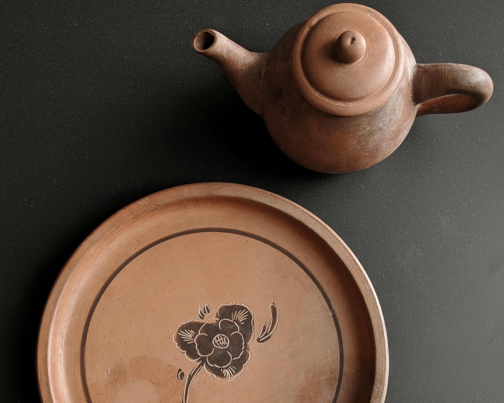
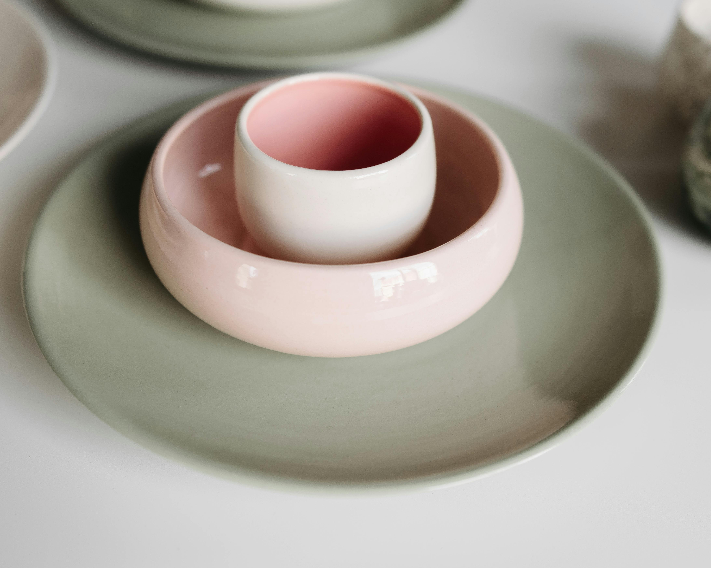

Más vendidos

Boles Farine
Boles sencillos hechos con yeso, aunque yo diría que le falta fermentación a esa masa madre.
10,25 €

Conjunto Chá
Set de un plato y una taza de terracota inspirada en la cerámica tradicional china. Se pueden comprar separados.
35 €

Conjunto Princesa
Vajilla minimalista para tu princesita favorita. (O para la princesa que llevas dentro, jeje)
24,38 €


Taza Espiga
Taza de arcilla con motivos egipcios. Pefecta para una bebida caliente, y... ¿por qué no para una cerveza arcaica también?
13,50 €